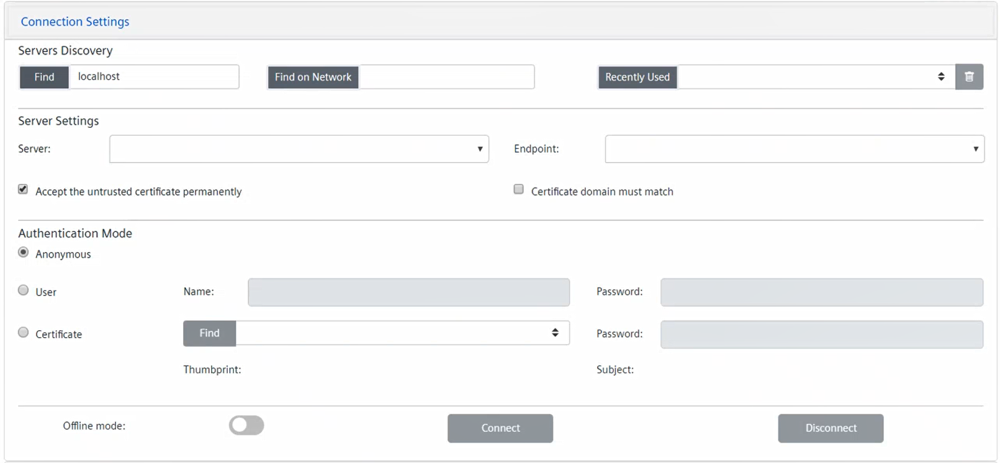

Set the Connection Parameters
- In the OPC UA Client Configuration section, click Connection Settings.
- In the Servers Discovery area, do one of the following:
- To discover OPC UA third-party servers locally, enter the name or address of the remote machine, and click Find.
NOTE: By default, in the Hostname field, localhost is set. - To discover OPC UA third-party servers over the network on a specific station, in the field, enter the URL of the machine where the discovery service is running and then click Find on network.
- To select a recently used OPC UA third-party server, click Recently Used and select it from the drop-down list that includes the configured servers.
NOTE: To remove the configuration of a server from the list, select it, click Delete server configuration , and then click Yes.
, and then click Yes. - In the Server Settings area, do the following:
a. From the Server drop-down list, select the OPC UA third-party sever to whom you want to connect.
NOTE: You can also enter the server name manually.
b. From the Endpoint drop-down list, select the appropriate security level endpoint for the selected OPC UA third-party server.
c. By default, the check box Accept the untrusted certificate permanently is selected. This means that the OPC UA client can communicate also with an OPC UA third-party server whose certificate is not in the list of trusted certificates. If you deselect this check box, the communication with that server will be possible only if you previously loaded its certificate locally on your machine.
d. By default, the check box Certificate domain must match is deselected. This means that the client-server connection is accepted also if the server certificate contains domain information different from the server with which the connection is being established. Select this check box if a connection must be established only if the server domain must match the domain information in the certificate. - Depending on the authentication modes supported by the OPC UA third-party server, in the Authentication Mode area, specify your user’s connection in one of the following ways:
- To connect anonymously, select the Anonymous option.
- To connect through your user's credentials, do the following:
a. Select the User option.
b. Enter your user’s Name and Password. - To connect through your user’s signed certificate, do the following:
a. Select the Certificate option.
b. Click Find to populate the drop-down list with the PFX or PEM files stored in C:\Program Files (x86)\Siemens\OPC UA Adapter\Certificates.
c. Select the appropriate PFX or PEM file from the drop-down list. (If the file is not protected by password, its Thumbprint and Subject unique information also displays.)
d. If the file selected file is protected by password, enter Password. (In this case, the file Thumbprint and Subject unique information displays only after you enter the password.)

If you selected a server recently used (see step 2, above), its authentication mode settings display automatically.


LDS service and OPC UA servers discovery
To allow the OPC UA servers discovery, the Local Discovery Server (LDS) service must be installed and running on the computer where the OPC UA server is installed.
The LDS service provides the necessary infrastructure to expose publicly the OPC UA servers available for a given computer.
To be visible for the discovery, each OPC UA server must register with the LDS service. Then the OPC UA client will be able access the LDS and get the list of OPC UA servers registered with it. This list will include only the OPC UA servers active at the moment of request.
Alternatively, it is required to manually enter the exact address of the OPC UA server to connect.